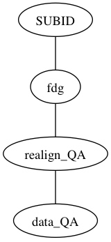

Realigning Frames¶
This is the first step of analyzing PET data.
It does not matter if you are doing MRI guided processing or pet-only processing, in both cases you need to realign your frames. Since this is independent of mri-guided or pet-only, we only need to do this once, and the results will be used (and or reused) for any higher level processing.
USE pet_realign_QA.py for
- FDG (6 frames)
- AV45 (4 frames)
- 4-frame PIB (4 frames)
USE pet_dynpib_realignQA.py for
- dynamic PIB acquisition (34-35 frames)
pet_realign_QA.py¶
- This process
- spm_realign to align all frames to the first using a 2-pass algorithm
- Runs QA so movment and noise can be checked
- Creates a mean image, centers mean image
- makes a summed image, centers summed image
![graph pet_realign {
node [shape=box]; f1 [label="Frame1"]; f2 [label="Frame2"]; f3 [label="Frame3"]; f4 [label="Frame4"]; f5 [label="Frame5"];f6 [label="Frame6"];
node [shape=box,style=filled,color=lightgrey]; r1 [label="rFrame1"]; r2 [label="rFrame2"]; r3 [label="rFrame3"]; r4 [label="rFrame4"]; r5 [label="rFrame5"];r6 [label="rFrame6"];
node [shape=circle]; realign
f1 -- "realign" -- r1
f2 -- "realign" -- r2
f3 -- "realign" -- r3
f4 -- "realign" -- r4
f5 -- "realign" -- r5
f6 -- "realign" -- r6
r1 -- "mean"
r2 -- "mean"
r3 -- "mean"
r4 -- "mean"
r5 -- "mean"
r6 -- "mean"
"mean" -- "centered mean"
r1 -- "summed" [color="blue"]
r2 -- "summed" [color="blue"]
r3 -- "summed" [color="blue"]
r4 -- "summed" [color="blue"]
r5 -- "summed" [color="blue"]
r6 -- "summed" [color="blue"]
"summed" -- "centered summed" [color="blue"]
}](_images/graphviz-d2f709936acabdb22e84e0b1b8cf46baad93142e.png)
Result¶
This results in a new directory in the subjects <tracer> directory realign_QA with subdir data_QA

realign_QA holds:
data_QA/
pyscript_realign.m
rB12-319_FDG_frame0001.nii.gz
rB12-319_FDG_frame0002.nii.gz
rB12-319_FDG_frame0003.nii.gz
rB12-319_FDG_frame0004.nii.gz
rB12-319_FDG_frame0005.nii.gz
rB12-319_FDG_frame0006.nii.gz
rp_B12-319_FDG_frame0001.png
rp_B12-319_FDG_frame0001.txt
data_QA holds:
data4d_rB12-319_FDG_frame0001.nii.gz
QA_framesdata4d_rB12-319_FDG_frame0001.png
Robust_framediff_mediandata4d_rB12-319_FDG_frame0001.png
Data QA¶
So how do you know if the data is okay??
- Check realign_QA/data_qa/data4d_*
open fslview
open data_4d_* file
click play movie icon
look for excessive movement in playback
- Check QA plots with gthumb
- data_QA/QA_framesdata4d_r<SUBID>_<tracer>_frame0001.png
- realign_QA/rp_B12-319_FDG_frame0001.png
{kind=link}